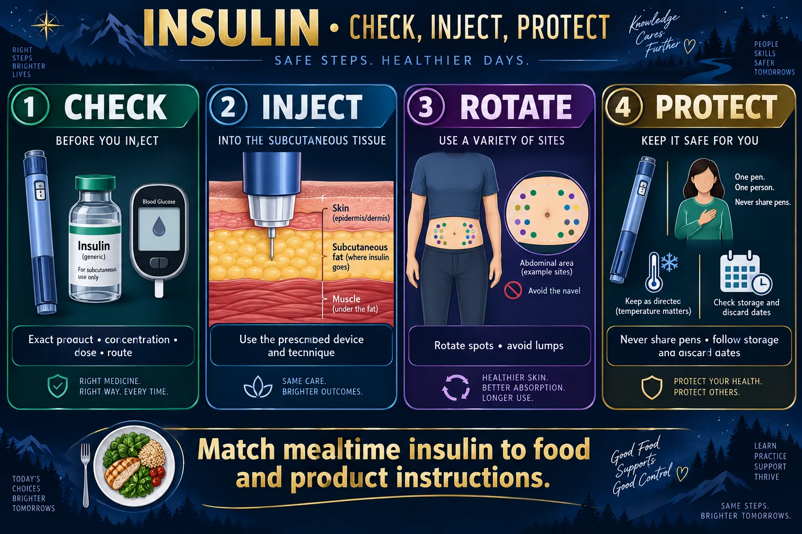

Diabetes II 💉
Part 2 of 2 — insulin, oral agents, sick days, hypoglycemia, feet and self-monitoring
This page = the treatment. Which insulin, when it peaks, which pill does what, what to do on a sick day, how to rescue a low, and the foot-care teaching that prevents amputations. The sister page NG-290 — Diabetes = the disease: patho, type 1 vs type 2, the 3 P's, diagnostic numbers and long-term complications. Read that one first if the "why" isn't solid yet.
INSULIN
STEP 1 · TIMING IS EVERYTHINGEvery insulin does the same job. The whole exam is when it starts, when it peaks, and how long it lasts — because the peak is when your patient gets into trouble.
⏱️ Insulin timing: identify the actual product
Mealtime / rapid
- Rapid analogs act sooner and usually have a shorter duration than regular insulin.
Regular
- Slower onset than rapid analogs; match meal timing to the prescribed product.
NPH
- Intermediate action with a noticeable and variable peak.
Basal analogs
- Usually less pronounced peaks; duration varies widely by product and concentration.
📈 Onset · peak · duration — the action curves
🖼️ Shown in the picture: Insulin timing: identify the actual product ↑
⚡ RAPID acting — lispro, aspart, glulisine
Give it with the food in front of you. Onset ≈15 min.
- Clear. Given SQ (also used in insulin pumps).
- Best choice for correcting a high sugar before a meal.
- Highest short-term hypoglycemia risk if the meal doesn't arrive.
💊 SHORT acting — REGULAR insulin
The only insulin that can go in a vein. Clear.
- IV push or IV infusion (drip) — used in DKA/HHS and hyperkalemia.
- SQ dosing usually ~30 min before a meal.
- It is the insulin you draw up first when mixing with NPH.
🌫️ INTERMEDIATE — NPH (the cloudy one)
- Cloudy — the only routinely cloudy insulin. Gently roll between the palms to resuspend; never shake.
- SQ only. Never IV, never in a drip.
- Usually given twice a day; the broad afternoon peak means the patient needs food when it peaks.
🛏️ LONG acting — glargine, detemir
- No peak, no mix. Clear, but never mixed in a syringe with another insulin.
- Glargine typically once daily at the same time each day; detemir may be once or twice daily.
- Provides the flat basal layer; meal coverage comes from a separate rapid/short insulin.
🔬 Where it goes in — sites, angle and the tissue underneath

Use the actual product and an individualized administration plan.
🔍 Open full-size illustration📖 Read the illustration as text
Check product, concentration, dose, route and glucose. Use prescribed subcutaneous technique, rotate spots within a region, and avoid lipohypertrophy. Never share pens, even with a new needle. Storage and discard dates vary; never freeze insulin. Match mealtime insulin to food and product instructions.
🥛 Mixing NPH + Regular — clear before cloudy
💉 Mixing only when explicitly permitted
- Verify that the two prescribed products may be mixed.
- For compatible regular + NPH: follow label/institution steps; draw clear regular insulin before cloudy NPH.
- Resuspend NPH gently as its label directs.
- Never mix glargine or degludec with other insulin.
Pens are not mixing containers. Confirm concentration and syringe/device compatibility; demonstrate the exact technique taught.
⭐ 7 insulin rules that get tested
- Peaks + Plates — food must be present at the peak.
- No Peak, No Mix — glargine and detemir go alone in the syringe.
- IV = Regular only — push or infusion.
- Clear → Cloudy when drawing up a mix.
- Rotate sites; abdomen absorbs most predictably; stay ~2 in from the umbilicus.
- Sick days = still take insulin, even if not eating (see below).
- Hypoglycemia ≤70: awake and able to swallow safely → feed them; not able → IV dextrose (or glucagon if no IV).
ORAL & NON-INSULIN AGENTS
STEP 2 · TYPE 2 ONLYDiet and exercise come BEFORE any pill. Then metformin is usually the first-line drug. Learn each class by which organ it argues with.
🗺️ Which organ does each class talk to?
🗺️ Non-insulin treatment: main actions
🫘 Metformin
- Reduces liver glucose production; assess kidney function and clinical context.
🩸 Sulfonylureas
- Increase insulin secretion; hypoglycemia is a key risk.
🫘 SGLT2 inhibitors
- Increase urinary glucose loss; watch for dehydration, genital infection and possible euglycemic DKA.
🍽️ GLP-1–based therapy
- Glucose-dependent effects on insulin/glucagon and appetite; GI effects and specific precautions vary.
💧 Pioglitazone
- Improves insulin sensitivity; edema and heart-failure risk matter.
🧪 DPP-4 inhibitors
- Enhance endogenous incretin action; choose agents with renal and other factors in mind.
💊 METFORMIN — the first-line one
Answer first: metformin rarely causes hypoglycemia on its own, because it doesn't force insulin out of the pancreas — it tells the liver to stop dumping glucose.
- Often supports modest weight loss; take with food to blunt GI upset (nausea, diarrhea, metallic taste).
- Lactic acidosis is the rare, serious risk — much more likely with renal impairment, hypoxia, sepsis or heavy alcohol use.
- Teach: avoid excessive alcohol. Report muscle aches, unusual fatigue, trouble breathing, feeling very cold.
- Usually held around iodinated IV contrast studies — follow your facility protocol for when to stop and when to restart after renal function is rechecked.
- Long-term use can lower vitamin B12.
🚨 SULFONYLUREAS — the hypoglycemia class
Glipizide, glyburide, glimepiride — they make the beta cell release insulin whether or not the patient ate.
- Hypoglycemia is the #1 adverse effect — skipped meals are dangerous.
- Weight gain is expected.
- Alcohol — can trigger both hypoglycemia and a flushing/disulfiram-like reaction with some agents.
- Photosensitivity — sunscreen and protective clothing.
- Use cautiously in older adults and in renal or hepatic impairment (drug accumulates → prolonged lows).
⚠️ TZD — pioglitazone · the "ONE heart" drug
- Improves insulin sensitivity in muscle and fat.
- Fluid retention → avoid in heart failure. New pitting edema, sudden weight gain, crackles or dyspnea = stop and report.
- Monitor liver function; avoid in active liver disease.
- Weight gain and increased fracture risk with long-term use.
💧 SGLT2 inhibitors — "-flozin"
Canagliflozin, dapagliflozin, empagliflozin. They block glucose reabsorption in the kidney so glucose is peed out.
- Expect more urination → dehydration, orthostatic hypotension, dizziness.
- Genital yeast infections and UTIs — sugary urine feeds organisms. Teach perineal hygiene and to report burning/itching.
- Can cause ketoacidosis with only mildly elevated glucose ("euglycemic DKA") — take symptoms seriously even when the meter looks fine.
⭐ Which drug does which thing — quick table
| Class · example | Mechanism | The thing you must teach or watch |
|---|---|---|
| Biguanide · metformin | ↓ hepatic glucose output, ↑ sensitivity | Lactic acidosis risk; hold around IV contrast per policy; GI upset; ↓ B12 |
| Sulfonylurea · glipizide, glyburide | Stimulates insulin release | Hypoglycemia, weight gain, alcohol, sun sensitivity |
| Meglitinide · repaglinide | Fast, short insulin release with meals | No meal → no dose |
| TZD · pioglitazone | ↑ insulin sensitivity | Fluid retention → avoid in heart failure; liver monitoring |
| α-glucosidase inhibitor · acarbose | Slows carbohydrate absorption | Flatulence/bloating; treat lows with pure glucose only |
| DPP-4 · sitagliptin ("-gliptin") | Prolongs incretin hormones | Low hypoglycemia risk; report severe abdominal pain (pancreatitis) |
| GLP-1 agonist · liraglutide ("-tide") | Incretin mimic; slows gastric emptying | Injected but NOT insulin; nausea, weight loss; report severe abdominal pain |
| SGLT2 · empagliflozin ("-flozin") | Dumps glucose into the urine | Dehydration, UTIs/yeast, euglycemic DKA |
DIET & SICK DAYS
STEP 3 · TEACHDiet and exercise come before every pill and every injection — and illness is the day the plan usually falls apart.
🖼️ Shown in the picture: Insulin: check, inject, protect ↑
🥗 DIET — brown beats white
Answer first: consistent carbohydrate, high fiber, spread across the day.
- Choose BROWN / whole: beans, brown rice, whole-grain bread, oats, vegetables, nuts — high fiber = slower glucose rise.
- Limit WHITE / refined: white bread, white rice, potatoes and fries, sugary cereal.
- Avoid concentrated simple sugars — regular soda, candy, fruit juice, sweet tea — except when treating a low.
- Do not skip meals, especially on a secretagogue or insulin. Consistency matters more than perfection.
- Alcohol: with food only, and it can cause delayed hypoglycemia hours later.
🥗 Food patterns, not food-color rules
Consider the whole meal
- Carbohydrate amount, fiber, protein, fat, portion size and medicines all influence glucose response.
Choose a workable plan
- Match nutrition to preferences, access, culture and prescribed insulin. “Brown” does not automatically mean whole-grain or low glucose impact.
🏃 EXERCISE — the free insulin
- Activity lowers glucose and improves receptor sensitivity for hours afterwards.
- Check glucose before exercising; carry a fast carbohydrate.
- Don't inject into a limb you're about to work hard — faster absorption, faster low.
- Wear proper footwear and inspect feet afterwards.
- If glucose is very high with ketones present, don't exercise — it can push the sugar higher.
🤒 SICK DAY RULES — the most-missed teaching point
Illness RAISES blood sugar. Stress hormones push glucose up even when the patient can't eat. Never omit basal insulin just because the patient isn't eating.
🧾 Everyday self-care teaching
- Carry fast sugar at all times — glucose tabs in the bag, the car and the desk.
- Medical alert identification — bracelet or card.
- Never share a pen, needle or lancet, even with a new needle.
- Dispose of sharps in a rigid, puncture-proof container.
- Dental care — gum disease worsens control, and control worsens gum disease.
- Vaccinations — influenza and pneumococcal are routinely recommended; infection is the #1 trigger of a crisis.
HYPOGLYCEMIA
STEP 4 · THE EMERGENCYLow sugar kills faster than high sugar. The brain has no glucose reserve.
⏱️ THE RULE OF 15 — drawn

Measure glucose and match the response to the person’s condition.
🔍 Open full-size illustration📖 Read the illustration as text
High glucose: increased urination and thirst, fatigue or blurred vision. Vomiting, deep breathing, dehydration or confusion require urgent evaluation for a hyperglycemic crisis. Low glucose: below 70 mg/dL. Shaking, sweating, hunger or confusion may occur, but warning symptoms may be absent. If alert and able to swallow safely: give 15 g fast carbohydrate; recheck in 15 minutes and repeat if still below 70 mg/dL, per the adult care plan. If swallowing is unsafe: no oral food or drink. Obtain emergency help and give prescribed glucagon or IV dextrose according to the setting and protocol.
🚑 Low glucose: match the rescue to swallowing safety
Alert and able to swallow
- For most adults, glucose below 70 mg/dL: give 15 g fast carbohydrate; recheck in 15 minutes and repeat if still low, per the care plan.
- Read glucose-tablet labels; the number of tablets needed varies.
Unable to swallow safely
- No oral food, drink or gel. Obtain emergency help.
- Use prescribed glucagon or IV dextrose according to the setting and protocol.
🚨 Recognize it before the meter does
HIWASH — Headache · Irritable · Weakness · Anxious · Sweaty/Shaky · Hungry. Plus pallor, cool clammy skin, tachycardia, blurred vision, confusion, slurred speech.
Hypoglycemia unawareness — after many lows, or with beta blockers or autonomic neuropathy, the warning symptoms disappear. Beta blockers can mask the tremor and tachycardia, but sweating usually persists.
✅ After the rescue — close the loop
- Recheck glucose; document the episode, the treatment and the response.
- Ask why: missed meal? extra activity? dose error? new drug? alcohol? illness?
- Notify the provider for recurrent or severe lows — the regimen probably needs changing.
- Re-teach the patient and family, and check that a glucagon kit is available and in date if they are on insulin.
FEET & SELF-MONITORING
STEP 5 · PREVENT THE AMPUTATIONNeuropathy removes the pain warning, poor circulation removes the healing. A diabetic foot is a delicious feast for bacteria.
🔬 Foot care, drawn — and how to cut the nails
🦶 Daily foot care
Look
- Inspect soles, heels and between toes; use a mirror or assistance.
Protect
- Wear properly fitting footwear; avoid barefoot walking and heating pads.
Skin and nails
- Wash and dry carefully; moisturize dry skin while avoiding between toes. Trim straight across if safe, or seek trained help.
Report
- New wounds, spreading redness, warmth, swelling or color changes need prompt review.
✅ Daily foot routine — the exam answers
- Inspect DAILY, not weekly — use a mirror or ask a family member for the soles.
- Wash with warm (not hot) water and mild soap; pat dry, especially between the toes.
- Lotion on the top and bottom, never between the toes — moisture there breeds fungus.
- Soft cotton or moisture-wicking socks, changed daily. Not nylon, no tight elastic bands.
- Well-fitting closed shoes, broken in gradually; shake them out before putting them on.
- Never go barefoot, indoors or out.
- Trim nails straight across; a podiatrist manages thick nails, corns and calluses.
- Report any non-healing sore, color change, or new numbness to the provider.
🩸 Self-monitoring of blood glucose
- Wash hands with soap and warm water and dry — food residue on a finger gives a falsely high reading.
- Use the side of the fingertip, not the center pad — fewer nerve endings, less pain.
- Rotate fingers; let the arm hang or warm the hand if the drop won't form. Don't squeeze hard.
- Check strip expiry and coding, and store strips in their sealed container.
- Bring the meter and the log to appointments; continuous glucose monitors still need confirmation fingersticks in some situations.
🆕 Newer guidance — side notes (your textbook answer stays the exam answer)
- Regular insulin is the classic IV insulin and the usual exam answer; some rapid-acting analogs are also labeled for IV use under a protocol. Always verify the exact product, route and concentration.
- “No peak” does not mean “no lows”: any insulin can cause hypoglycemia.
- Insulin products differ: concentrated insulins (U-200, U-300, U-500), premixes and biosimilars have their own timing, devices and storage. In-use discard times vary by product — there is no single 28-day rule. Never mix glargine, detemir or degludec with another insulin.
- Metformin and contrast: whether to hold depends on kidney function, the contrast route and local policy — not every contrast study needs a hold. Metformin is common first-line, but heart or kidney disease may make another class the first choice.
- “Brown” food is not automatically whole-grain or low in glucose impact — carbohydrate amount, fiber, portion and the whole meal matter.
From Codex’s 7 Oct review, sources checked that day. For tests and NCLEX-style questions, answer the way your textbook teaches.
QUICK RECALL
SAY IT OUT LOUD➡️ Where to go next
Disease side: NG-290 — Diabetes (patho, type 1 vs 2, 3 P's, diagnostic numbers, complications). Emergencies: NG-291 — DKA vs HHS. Drug page: NG-224 — NCLEX Drugs 8 · Insulins (open). Steroids raise glucose in everyone: NG-288.